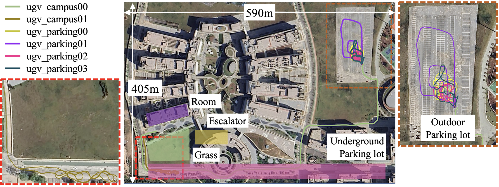
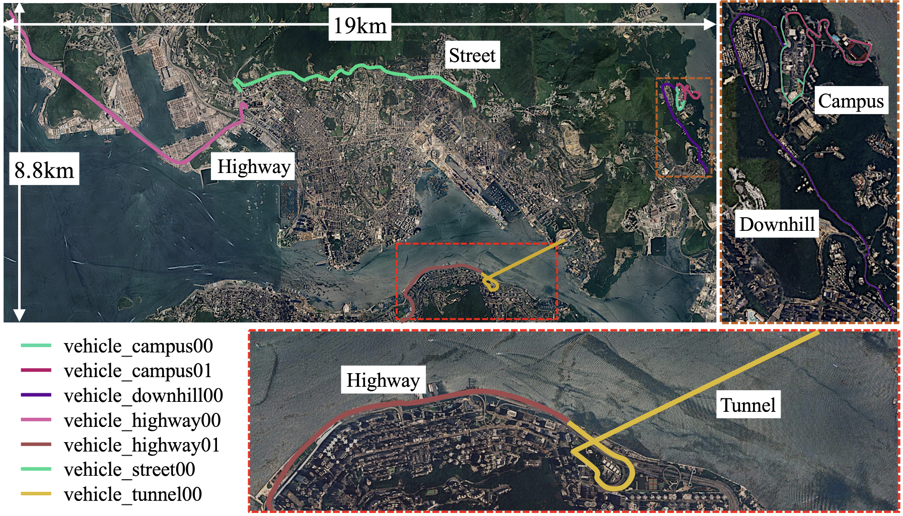

FusionPortable V2
From Campus to Highway: A Unified Multi-Sensor Dataset for Generalized SLAM Across Diverse Platforms and Scalable Environments
News¶
- (20240508) Groundtruth poses of all vehicle-related sequences are postprocessed: eliminate poses characterized by high uncertainty.
- (20240422) Data can be downloaded from Baidu Wang Pan with the code byj8.
- (20240414) All sequences, ground-truth trajectories, and ground-truth maps have been publicly released. If you find issues of GT trajectories and maps, please contact us or report here.
- (20240413) A small simulated navigation environment is provied.
- (20240408) The development tool has been initially released.
- (20240407) Data can be downloaded from Google Drive.
Overview¶
Sensors¶
- Handheld Sensor: 128-beam Ouster LiDAR (OS1, 120m range)
- Handheld Sensor: Stereo FLIR BFS-U3-31S4C cameras
- Handheld Sensor: Stereo DAVIS346 cameras
- Handheld Sensor: STIM300 IMU
- Handheld Sensor: 3DM-GQ7-GNSS/INS
- UGV Sensor: Omron E6B2-CWZ6C wheel encoder
- Legged Robot Sensor: Built-in joint encoders, contact sensors, and IMU of the Unitree A1

Various Platforms and Scenarios¶

Ground-Truth Devices¶
Third-View of Data Collection¶
| Environment | Platform | Preview |
|---|---|---|
Escalator |
Handheld |
|
| Corridor | Handheld |  |
| Underground Parking Lot | Legged Robot |  |
| Campus | UGV |  |
| Outdoor Parking Lot | UGV |  |
Details¶
Organization¶

Note:
1.<frame_id>.yaml store intrinsics and extrinsics of a specific sensor2.
<map_env>.pcd ground-truth map3.
<platform_env>.bag rosbag4.
<platform_env>.7z compressed rosbagTrajectories of Sequences¶


Download Sequence¶
Please click these below links to download:
Option 1 (recommend, long-term maintenance): Google DriveOr copy this link
https://drive.google.com/drive/folders/1PYhnf3PlY5r0hbyzWDGTUTPxRMl6SYa-?usp=sharing
Option 2 (long-term maintenance): Baidu Wang Pan with the code byj8
Or copy this link
https://pan.baidu.com/s/1lZwK-TNrCyoyC9oWEs8jUg?pwd=byj8
Option 3 (unavailable now): Link to Baidu Pan (unavailabel now)
After downloading, please extract compressed ROSBag in the terminal: 7z l <platform_env>.7z
Calibration Sequences¶
Hanheld Sequences¶
Picture |
Sequence | Features |
Preview |
|---|---|---|---|
 |
handheld_grass00 | Textureless | preview |
 |
handheld_room00 | Dynmaic | preview |
|
handheld_room01 | Dynmaic | preview |
 |
handheld_escalator00 | Non-inertial | preview |
|
handheld_escalator01 | Non-inertial | preview |
 |
handheld_underground00 | Structureless | preview |
Legged Robot Sequences¶
Picture |
Sequence | Features |
Preview |
|---|---|---|---|
|
legged_grass00 | Structureless, Deformable | preview |
|
legged_grass01 | Structureless, Deformable | preview |
 |
legged_room00 | Dynamic | preview |
| legged_transition00 | Illumination, GNSS-deined | preview | |
|
legged_underground00 | Structureless | preview |
UGV Sequences¶
Picture |
Sequence | Features |
Preview |
|---|---|---|---|
 |
ugv_parking00 | Structureless | preview |
|
ugv_parking01 | Structureless | preview |
|
ugv_parking02 | Structureless | preview |
|
ugv_parking03 | Structureless | preview |
 |
ugv_campus00 | Large-Scale | preview |
|
ugv_campus01 | Fast Motion | preview |
| ugv_transition00 | GNSS-Denied | preview | |
| ugv_transition01 | GNSS-Denied | preview |
Vehicle Sequences¶
Picture |
Sequence | Features |
Preview |
|---|---|---|---|
 |
vehicle_campus00 | Large-Scale | preview |
|
vehicle_campus01 | Large-Scale | preview |
| vehicle_street00 | Large-Scale, Dynmaic | preview | |
| vehicle_tunnel00 | Low Texture and Structure | preview | |
| vehicle_downhill00 | Illumination | preview | |
 |
vehicle_highway00 | Structureless | preview |
|
vehicle_highway01 | Structureless | preview |
 |
vehicle_multilayer00 | Perceptual Aliasing | preview |
Some High-Resolution GT Maps¶
| Environment | Area | Preview |
|---|---|---|
| UGV Campus | 0.36km^2 |  |
| Underground Parking | 0.037km^2 |  |
Experiments¶
Calibration¶
Projected Point Cloud with Camera-LiDAR Calibration (LCE-Calib)


Localization Evaluation¶
Running FAST-LIO2: handheld_room00, legged_grass00, ugv_campus00, vehicle_highway00


Running COIN-LIO : vehicle_tunnel00 (COIN-LIO)

Mapping Evaluation¶
Perception Test (Monocular 3d Object Detection, Segmentation, Depth Estimation)¶
Utilizing the VisionFactory for training and testing vision tasks.

Navigation Demo in the Underground Parking Lot¶
Importing the GT map as the simulated environment (in Gazebo), we can employ the open-source CMU exploration package to achieve the navigation experiment.
Tools¶
The development tool can be used by clicking the button below
Known Issues¶
We have listed some knowns issues in our dataset:
- Some dynamic objects exist and not removed from the ground-truth maps. If you want the ``clear'' map for experiments, I recommend you to try the maps in FusionPortable first.
If you have any other issues, please report them on the repository:
Related Works¶
FusionPortable-release works were used in the following papers. Please checkout these workds if you are interested. (Please contact us if you would like your work mentioned here).
- LiDAR Only Neural Representations for Real-Time SLAM, IEEE RAL 2023
- TBD
Publications¶
- FusionPortableV2: A Unified Multi-Sensor Dataset for Generalized SLAM Across Diverse Platforms and Scalable Environments
Hexiang Wei*, Jianhao Jiao*, Xiangcheng Hu, Jingwen Yu, Xupeng Xie, Jin Wu, Yilong Zhu, Yuxuan Liu, etc.
Under Review
[Arxiv]
Contact¶
- Dr. Jianhao Jiao (jiaojh1994 at gmail dot com): General problems of the dataset
- Mr. Hexiang Wei (hweiak at connect dot ust dot hk): Problems related to hardware